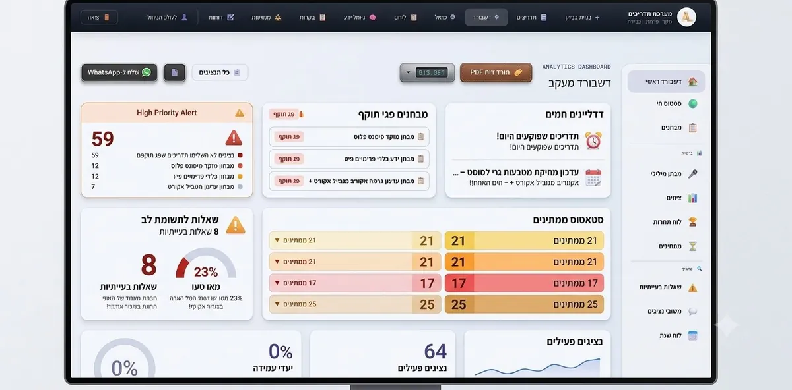

כשבוחרים מערכת לניהול ידע, השאלה האמיתית היא לא "איפה נשמור את הקבצים" אלא "איך העובד החדש, התורן במשמרת לילה, או הטכנאי בשטח ימצא תוך 30 שניות את התשובה הנכונה בלי להתקשר למישהו". מערכת ניהול מסמכים פותרת אחסון וגרסאות. מערכת ניהול ידע פותרת את השאלה מה קורה עם המידע אחרי שהוא נשמר - האם הוא נגיש, מעודכן, ומובן למי שלא כתב אותו. אם אתם בוחנים פתרון, הקריטריון המרכזי הוא לא כמות הפיצ'רים אלא כמה מהר אדם שלא מכיר את המסמך מגיע לתשובה הנכונה.
הבעיה: ידע קיים אבל אף אחד לא מוצא אותו
ברוב הארגונים הידע קיים - נהלים, מסמכי הדרכה, תשובות לשאלות נפוצות, פתרונות לתקלות חוזרות. הבעיה היא שהוא מפוזר בין תיקיות שיתוף, קבוצות וואטסאפ, מיילים ישנים וראש של עובד ותיק אחד שיוצא לפנסיה בעוד שנה. כשמישהו חדש נתקל בבעיה, הוא לא מחפש במערכת - הוא שואל בקבוצה או ממתין שמישהו יענה. התוצאה היא זמן אבוד, תשובות לא עקביות, וידע שנמחק בפועל ברגע שעובד מפתח עוזב. לבחור מערכת ניהול מסמכים רגילה בשלב הזה זה כמו לקנות ארון נוסף לבלגן - הקבצים יהיו שם, אבל אף אחד לא ימצא אותם בזמן אמת.
הפתרון: מערכת שחושבת במונחי שאלות ותשובות, לא קבצים
זו בדיוק הסיבה ש-A.L Systems, בניהולו של אדיר לוי משדרות, בנתה את LearnIx - מרכזת את כל הידע הארגוני - נהלים, מדריכים, תשובות נפוצות ופתרונות לתקלות - במקום אחד שמאפשר חיפוש חופשי בשפה טבעית ולא רק לפי שם קובץ או תיקייה. במקום שעובד יצטרך לדעת איפה המסמך נמצא, הוא כותב את השאלה כמו שהוא היה שואל קולגה, והמערכת מחזירה את הקטע הרלוונטי מתוך המסמכים הקיימים. המערכת גם מסמנת מסמכים שלא עודכנו זמן רב ומראה אילו שאלות נשאלות הכי הרבה בלי שיש עליהן תשובה טובה - כך שמנהל הידע יודע בדיוק איפה לכתוב תוכן חדש במקום לנחש:

- חיפוש לפי כוונה ולא לפי מילת מפתח מדויקת - עובד שמחפש "מה עושים כשלקוח מבקש זיכוי אחרי 30 יום" צריך לקבל תשובה גם אם הנוהל כתוב בניסוח שונה לגמרי - זה ההבדל בין מנוע חיפוש קבצים לבין מערכת ניהול ידע אמיתית.
- מעקב אחרי מסמכים מיושנים - מערכת טובה מתריעה כשנוהל לא עודכן מעל שנה או כשיש סתירה בין שני מסמכים על אותו נושא, לפני שמישהו בשטח פועל לפי מידע שגוי.
- ניתוח פערי ידע לפי שאלות בפועל - רואים אילו שאלות נשאלות הכי הרבה ואין להן תשובה טובה במערכת - זה מכוון בדיוק איפה צריך לכתוב תוכן חדש, במקום לכתוב נהלים לפי ניחוש.
- הרשאות לפי תפקיד ולא לפי תיקייה - מידע רגיש (שכר, חוזים, נתוני לקוחות) נגיש רק למי שצריך, בלי צורך לנהל מבנה תיקיות מסורבל שמתפרק ברגע שמישהו עובר תפקיד.
- שילוב עם כלי העבודה הקיימים - חיפוש שמוטמע בתוך הצ'אט הארגוני או מערכת התמיכה, כך שעובדים לא צריכים לפתוח מערכת נפרדת - הידע מגיע אליהם איפה שהם כבר עובדים.
דוגמה: מוקד שירות עם 40 נהלים ו-12 נציגים חדשים בשנה
חברת שירותי אשראי מעסיקה מוקד של 25 נציגים, עם תחלופה של כ-12 עובדים חדשים בשנה. לכל נציג חדש לוקח כשלושה שבועות להרגיש בטוח בתשובות כי הנהלים פזורים ב-40 מסמכי וורד בתיקיית שיתוף, חלקם סותרים אחד את השני. לפני המעבר ל-LearnIx, נציג חדש שלא ידע איך לטפל בבקשת ביטול עסקה בתוך 14 יום פשוט שאל בקבוצת הוואטסאפ הפנימית וחיכה לתשובה, לפעמים עד 20 דקות, בזמן שהלקוח על הקו. אחרי שהעלו את כל הנהלים ל-LearnIx וחיברו אותה לצ'אט הפנימי, נציג יכול להקליד "ביטול עסקה אחרי 14 יום" ולקבל את הנוהל המדויק תוך שניות, כולל הסעיף הרלוונטי מודגש. מנהלת המוקד גם גילתה דרך דוח השאלות הלא-פתורות שהנושא שהכי הרבה נציגים מחפשים ולא מוצאים תשובה ברורה הוא טיפול בבקשות הקפאת חיוב - נושא שלא היה מתועד בכלל, והיא כתבה עליו נוהל חדש תוך יום.
מה ההבדל בין ניהול מסמכים לניהול ידע בפועל
מערכת ניהול מסמכים עונה על שאלות כמו מי ערך את הקובץ לאחרונה, מה הגרסה העדכנית, ומי מורשה לגשת אליו. אלה שאלות חשובות אבל הן לא עוזרות לעובד למצוא תשובה. מערכת ניהול ידע מוסיפה שכבה מעליה: הבנה של תוכן המסמך, יכולת לחפש בתוכו ולא רק בשמו, וזיהוי של פערים - נושאים שאין עליהם תיעוד בכלל. כשבוחרים מערכת, כדאי לבדוק לא רק אם היא שומרת קבצים בצורה מסודרת אלא אם היא בפועל מקצרת את הזמן שלוקח למישהו למצוא תשובה נכונה.
מה לבדוק לפני שחותמים על התקשרות
שלושה דברים קונקרטיים: ראשית, לבדוק את איכות החיפוש עם שאלות אמיתיות מהארגון שלכם, לא עם הדוגמאות של הספק. שנית, לוודא שיש מנגנון שמראה אילו מסמכים לא עודכנו זמן רב - בלי זה המערכת תמלא בעצמה בתוכן מיושן עם הזמן. שלישית, לבדוק כמה זמן לוקח להעלות את הידע הקיים ולחבר אותו - אם זה דורש פרויקט של חצי שנה עם צוות טכני צמוד, זה סימן אזהרה לארגון בגודל בינוני.
מי צריך לבדוק את זה בפועל, לא רק מנהל IT
ההחלטה הזו לא צריכה להישאר רק אצל מנהל מערכות מידע. מי שינהל את התוכן בפועל - ראש צוות שירות, מנהלת הדרכה, או מי שאחראי על הנהלים - צריך להיות בחדר כשבודקים את המערכת, כי הוא זה שיידע תוך דקה אם החיפוש מחזיר תשובות הגיוניות לשאלות שהעובדים שלו שואלים בפועל.